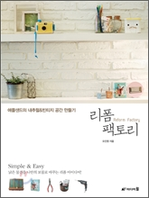
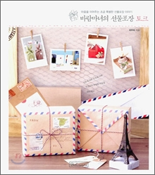
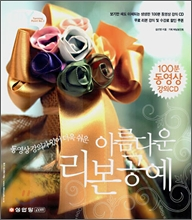
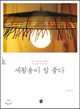
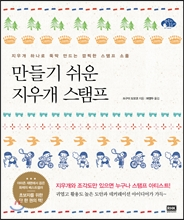

|  |
제목: 리폼 팩토리 : 애플샌드의 내추럴&빈티지 공간 만들기 저자: 오진영 출판사: 미디어윌 출판연도: 2011 리폼을 시작하기 전 준비물과 노하우를 알려주고, 초보자를 위한 리폼부터 전문가를 위한 리폼까지 다루고 있습니다. 이미지 출처: yes24 |
|  |
제목: 바람마녀의 선물포장 토크 : 마음을 이어주는 조금 특별한 선물포장 이야기 저자: 최주희 출판사: 비앤씨월드 출판연도: 2010
포장의 기본도구와 재료들을 알려주고, 포장의 기본과 리본장식 또한 배울 수 있습니다. 이미지 출처: yes24 |
|  |
제목: (동영상 강의가 있어 더욱 쉬운) 아름다운 리본 공예 저자: 김선영 출판사: 성안당 출판연도: 2006
동영상 강의를 담은 CD가 있어서 동영상을 보면서 리본 공예를 배울 수 있습니다. 이미지 출처: yes24 |
|  |
제목: 새활용이 참 좋다 : 에코 아티스트 늘봄의 업사이클 리빙 놀이 저자: 안혜경 출판사: 소란 출판연도: 2013
평소엔 버리고 말 쓰레기들을 리폼하고, 못 쓰는 물건들을 쓸 수 있게 만들며, 이미지 출처: yes24 |
|  |
제목: 만들기 쉬운 지우개 스탬프 : 지우개 하나로 뚝딱 만드는 깜찍한 스탬프 소품 저자: 쓰구이 도모코/허앵두 역 출판사: 알에이치코리아 출판연도: 2013
앞의 재료 메뉴에서 스탬프에 대해 이야기할 때 지우개 스탬프를 만들 수 있다고 했습니다. 이미지 출처: yes24 |